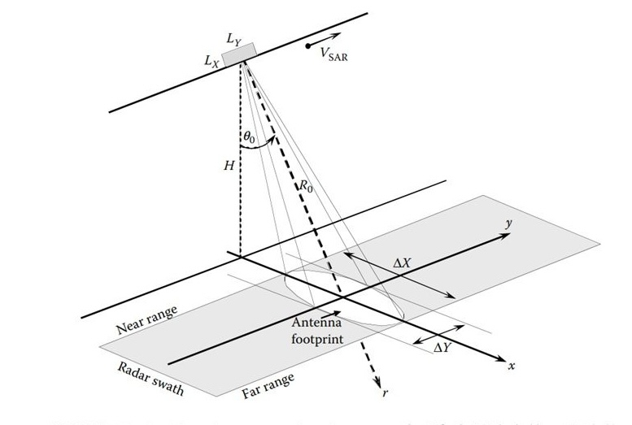
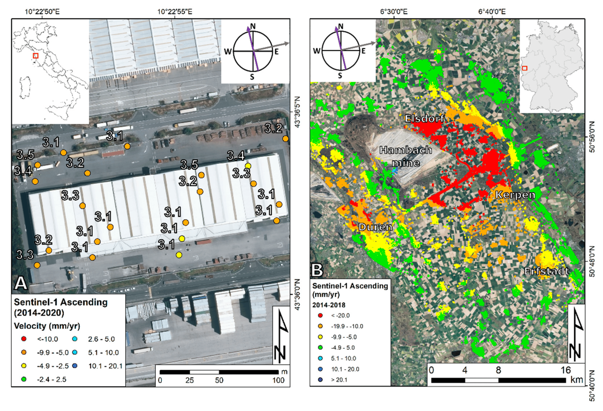

8 Week10—SAR
8.1 Summary
Two types of sensor: active and passive. (Which we have learnt at week1)
SAR works by utilizing the properties of radar wavelengths to detect conditions on the ground. It is mounted on satellites or airplanes that transmit radar waves to the ground and collect the signals reflected back. Unlike optical remote sensing, SAR is able to operate at night or in cloudy and rainy weather conditions because the radar waves can penetrate clouds and a certain level of vegetation.
The picture below shows the working principle of SAR.
Amplitude (backscatter) and phase：A high amplitude value usually means that the target is highly reflective and vice versa. For example, wet ground, buildings and rocks reflect radar waves strongly and appear as bright areas on the image, while bodies of water absorb more radar waves and usually appear as dark areas.
Differential Interferometric Synthetic Aperture Radar (DInSAR) & SAR
| SAR | DInSAR | |
|---|---|---|
| Principle | Radar waves are used to illuminate the surface and collect reflected signals, generating high-resolution images based on the intensity (amplitude) and phase of the reflected signals. | Based on two or more SAR images acquired at different times, small deformations of the surface are measured by calculating the phase difference. |
| Export | Land surface features | Small movements or deformations of the land surface |
| Mainly use for | Land surface cover classification, Environmental monitoring, Ocean and Ice sheet observations etc. | Earthquakes, Volcanic activity, Landslides, Urban subsidence and Glacial flow monitoring etc. |
How to identifying change?
subtract images: The difference between two SAR images of the same area acquired at different points in time was calculated by comparing their backscatter intensity (amplitude).
Ratio Change Detection: Calculate the backscatter intensity ratio of two images acquired at different time points.
Improved ratio log ratio images: Improvements on traditional ratio and log-ratio methods aimed at enhancing the changing signal and reducing errors due to noise or non-uniformity of the scene.
How to choose the best way?
- Based on your image collection.
- Availability and characterization of data.
- Image fusion. Especially methods that provide reliable results in the face of data noise and imperfections.
8.2 Applications
With respect to the DInSAR that was discussed this week, its spatial sampling is non-uniform. Generally speaking, locations with smooth surfaces, greenery, and woods have lower sampling densities. Certain events, such snow, construction, and street repaving, can cause a temporary or total loss of MP. When analyzing DInSAR data, two primary target kinds can be taken into account(Ferretti et al., 2000). Typically, persistent scatterers (PS) are point-like primary targets that respond steadily to SAR microwaves over an extended period of time. PS are typically found in large quantities on structures, wires, utility poles, antennas, bare rock, etc. DS(distributed scatterers) can be found in desert regions, cultivated fields, dispersed outcrops, areas covered in rubbish, etc. While A-DInSAR processing techniques focus only on PS or DS, several hybrid approaches have been proposed over the past decade.
Although I did not find examples of blending, I did find examples of DInSAR in 3D. the 3D positions have an uncertainty of a few meters. Therefore this aspect to consider when interpreting is related to the geometry of the SAR image and the orbital tube, which directly affects the accuracy of the terrain error.
Below is a warehouse at a freight terminal in the Tuscany region of central Italy.DInSAR not only examined the commercial area, including several buildings, but found evidence of a persistent settlement phenomenon (cracks, foundation problems) caused by the consolidation of highly compressible organic and clay soils that characterize the subsurface of the area(Ciampalini et al., 2019). 3D geolocation was also performed, based on subpixel location analysis and local-scale data correction supported by external positioning data (e.g., ground control points or LiDAR point clouds) to ensure more accurate geolocation. for subsequent analysis and resolution.

DInSAR technology has undergone tremendous development over the past two decades. The most important result of this development has been the ability to process large volumes of SAR imagery, thus enabling wide-area DInSAR monitoring programs. In general DInSAR is capable of detecting extremely small surface deformations (millimeter scale), thus detecting subtle changes in the surface, which is important for disaster prevention and management.
8.3 Reflection
This week’s study was about SAR, I was more concerned about the difference between SAR and DInSAR, then I realized the amazing difference between the two.SAR mainly detects the surface condition, while DInSAR detects the subtle changes on the surface, so it can be said that DInSAR is an advanced version of SAR. For the current global warming problem, DInSAR will have more to build on this problem.
It’s the last week of notes, and it feels like time is going by so fast, and this seems to be my last class in university. I hope I can graduate successfully!
8.4 Reference
Ciampalini, A., Solari, L., Giannecchini, R., Galanti, Y. and Moretti, S. (2019). Evaluation of subsidence induced by long-lasting buildings load using InSAR technique and geotechnical data: The case study of a Freight Terminal (Tuscany, Italy) - ScienceDirect. Available at: https://www.sciencedirect.com/science/article/pii/S0303243419301722 (Accessed: 15 March 2024).
Crosetto, M., Solari, L., Mróz, M., Balasis-Levinsen, J., Casagli, N., Frei, M., Oyen, A., Moldestad, D. A., Bateson, L., Guerrieri, L., Comerci, V. and Andersen, H. S. (2020). ‘The Evolution of Wide-Area DInSAR: From Regional and National Services to the European Ground Motion Service’. Remote Sensing. Multidisciplinary Digital Publishing Institute, 12 (12), p. 2043. doi: 10.3390/rs12122043.
Ferretti, A., Prati, C. and Rocca, F. (2000). ‘Nonlinear subsidence rate estimation using permanent scatterers in differential SAR interferometry’. IEEE Transactions on Geoscience and Remote Sensing. IEEE Transactions on Geoscience and Remote Sensing, 38 (5), pp. 2202–2212. doi: 10.1109/36.868878.